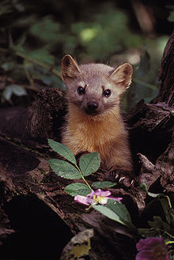

다롱이와 칭구들 - 서세지
- 카프리썬
- 서세지
- 소더기
서세지
서세지이란?
영어: Marten
학명: Martes
독일어: Marder
식육목 족제비아과에 속하는 동물.
한반도에는 노란목도리담비(Yellow-throated marten, Martes flavigula 대륙목도리담비 라고도 부름), 검은담비(M. zibellina)등이 서식하고 있다.
현재 남한에는 노란목도리담비만 서식한다.
노란목도리담비는 중대형 육식동물이 사라진 한국에서 아시아흑곰과 검독수리 다음 가는 최상위 육식동물로 군림하고 있다.
행동반경도 넓어 초식동물 개체수 관리도 하는 모양.
